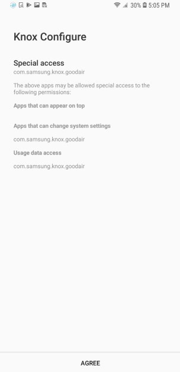
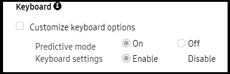
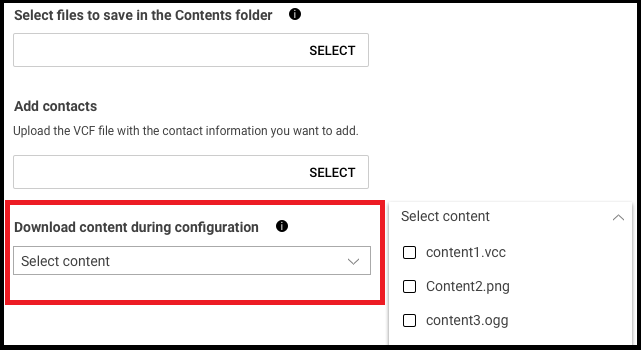
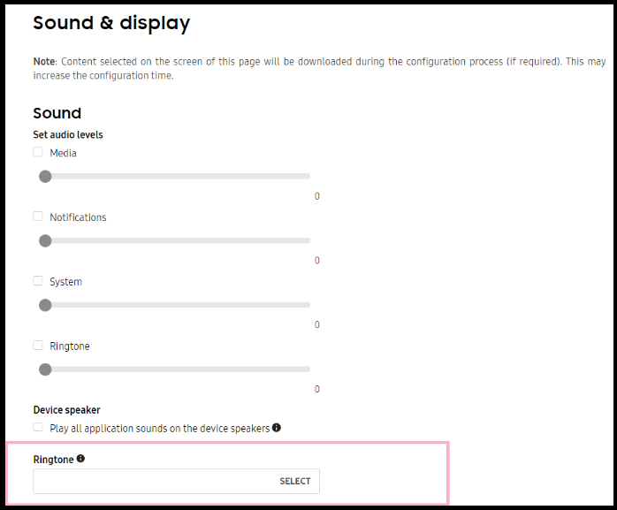
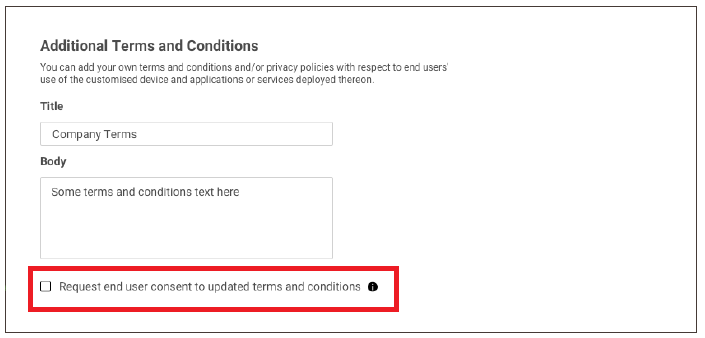

Knox Configure 1.16 release notes
Last updated July 26th, 2023
Knox Configure (KC)
Automatic page updates
To date, users must refresh a page manually to view its latest status. This has resulted in an undesired user experience, and can result in unnecessary or repeated device actions. To remedy this situation, the Knox Configure console now auto-refreshes when certain status updates are detected. The following actions and events now result in an auto-refresh within a currently displayed Knox Configure screen:
- Device assignments and un-assignments
- Push updates
- Device locks and unlocks
Notification center enhancements
To date, the Knox team has received numerous suggestions on how to improve the Knox Configure console’s notification efficiency. To date, the notification center retains notifications for just one login session. When a user logs out, notifications are cleared, and when they log in again, new notifications are triggered as applicable. However, holding notifications for just login session is too limited and can result in missing important notifications.
To remedy this issue, notifications will remain on the Knox Configure console, but will now disappear 7 days after being read or acted upon depending on the notification type.
Device Reboot enhancements
To date, Knox Configure can factory reset specific IT admin selected devices. However, customers have also requested the ability to reboot selected devices. With this release, factory reset and reboot are both available for devices in a Configured, Updates pushed, or Failed to configure status. A reboot is triggered without prompting for user consent.
This feature is available for Dynamic edition Knox Configure profiles (both normal and ProKiosk mode) on devices running Knox version 2.7.1 or above.
Enrollment customizations for special access permissions
This enhancement provides a new screen notifying a device user of special access permissions assigned by the admin for specific apps.

APN setting updates for Setup edition profiles
To date, APN settings have only been supported in Knox Configure Dynamic edition profiles. However, numerous customers have requested APN setting be made available in Setup edition Knox Configure profiles as well. With this release, the same APN settings available for Dynamic edition Knox Configure profiles are now available for Setup edition profiles.
Ability to switch off predictive mode text
To date, Knox Configure supports Keyboard settings in ProKiosk mode. However, customers have requested a feature to switch off predictive text, but keep keyboard settings enabled. As a result, the ability to switch off predictive text has been added to this release as an additional keyboard customization option.

This feature is available for both Setup and Dynamic edition (Normal mode only) profiles on devices running Knox version 2.7.1 or above.
Disable auto fill forms within Samsung Internet browser
This enhancement enables admins to enable and disable the auto-fill forms option within the Samsung Browser. Admins can now enable/disable the Browser auto-fill forms option within a Dynamic profile’s Browser settings field within the Knox Configure console.
This feature is available for Dynamic edition (Normal mode only) profiles on devices running Knox version 2.7.1 or above.
Download content in background during profile configuration

To date, device content is downloaded during device configuration.
With this feature, content is downloaded in the background by default, but selected Knox Configure content specified within the Download content during configuration is downloaded during device profile configuration.
Deprecate profile ringtone setting for Knox version 2.9 and above
With the Knox 3.0 version release, ringtone settings were no longer supported as a Knox Configure profile configuration option, but the parameter for selecting ringtone remained in the console, creating confusion for administrators.

To remedy this confusion, a tooltip has been added to the Knox Configure console explaining that the Ringtone option is no longer available for devices running Knox version 3.0 or later. This makes this configuration option available to legacy Knox versions, while skipping the ringtone setting from being applied to a profile configuration on Knox 3.0 and above devices.
User consent option added to custom Terms & Conditions updates
With this release, an option to Request end user consent to updated terms and conditions has been added to the Terms and Conditions portion of the profile configuration flow within the Knox Configure console.

When selected, end users must agree to the updated Terms and Conditions before these terms are committed to their device. If this option remains unselected, any updates to the Terms and Conditions are passed to the device user with the Knox Configure profile whether they agree to these terms or not.
User interface search function improvements
Currently, users may not know how the search function optimally works within the Knox Configure console. The console’s search capabilities are case insensitive within most tables, but case sensitive in some tables, such as the Devices tab, since the vast number of devices require case sensitivity. A partial match search is supported for each search parameter, but an exact match is applied to a device IMEI/SN. Additionally, a blank space between search keywords means an AND condition
The following are the tabs within the Knox Configure console, and the searchable columns or parameters within each. These will be better described in the Knox Configure User Guide beginning with this release:
- Profiles — PROFILE
- Devices > UPLOADS — RESELLER
- Devices > DEVICES - DEVICE ID, PROFILE, MODEL, TAGS
- Devices > DEVICES Device deletion log - DEVICE ID, MODEL, ORDER NO., DELETER
- Licenses - LICENSE NAME, KEY
- Applications - Application name, Package name, Description
- Administrators - ADIMINISTRATOR NAME, EMAIL
- Activity log - NAME, CATEGORY, EVENT, DESCRIPTION
Wearable Knox Configure (WKC)
Companion mode support added
IT admins can now maintain profile configurations assigned to wearable devices using Knox Configure while end users can switch between phone connection (WPC) mode and companion mode.
Additionally, a profile can be configured on the wearable device while connected to the phone. This feature maintains the device configuration during a mode change, and the companion mode configuration, so device users can use their configured wearable device with the phone connection.
Companion mode is available to wearable devices running Tizen version 4.0 and above.
APN setting updates for WKC Setup edition profiles
To date, APN settings have only been supported in Knox Configure Dynamic edition profiles for wearable devices. However, numerous customers have requested APN setting be made available in Setup edition Knox Configure profiles as well. With this release, the same APN settings available for Dynamic edition Knox Configure profiles are now available for Setup edition profiles for wearable devices.
Back to release notesIs this page helpful?